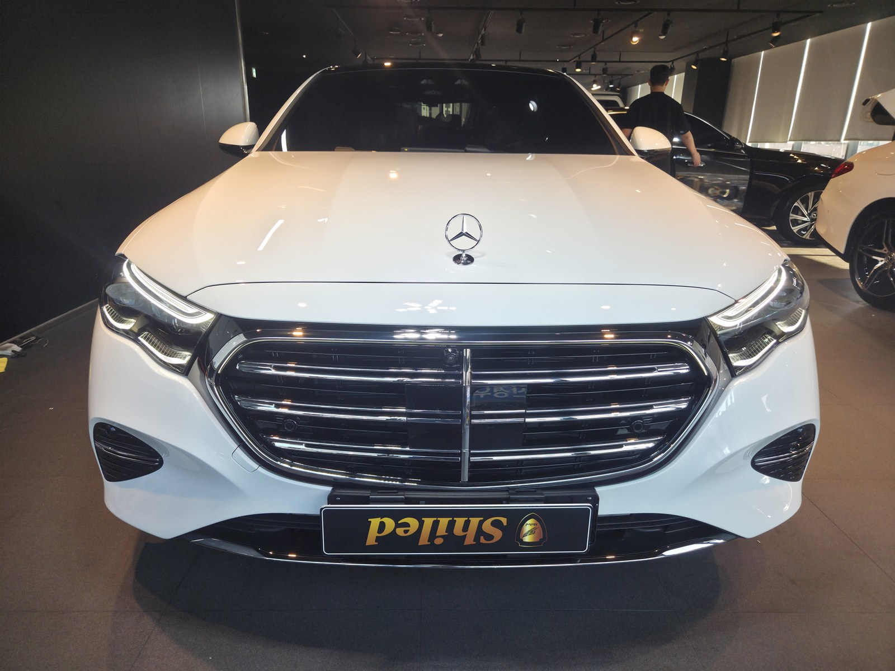
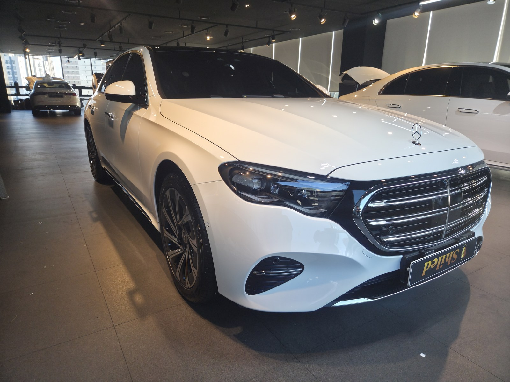
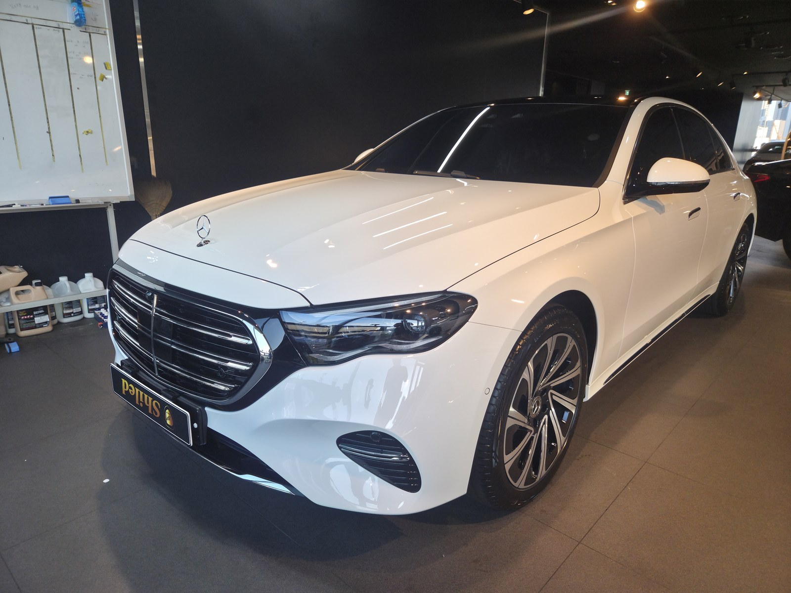
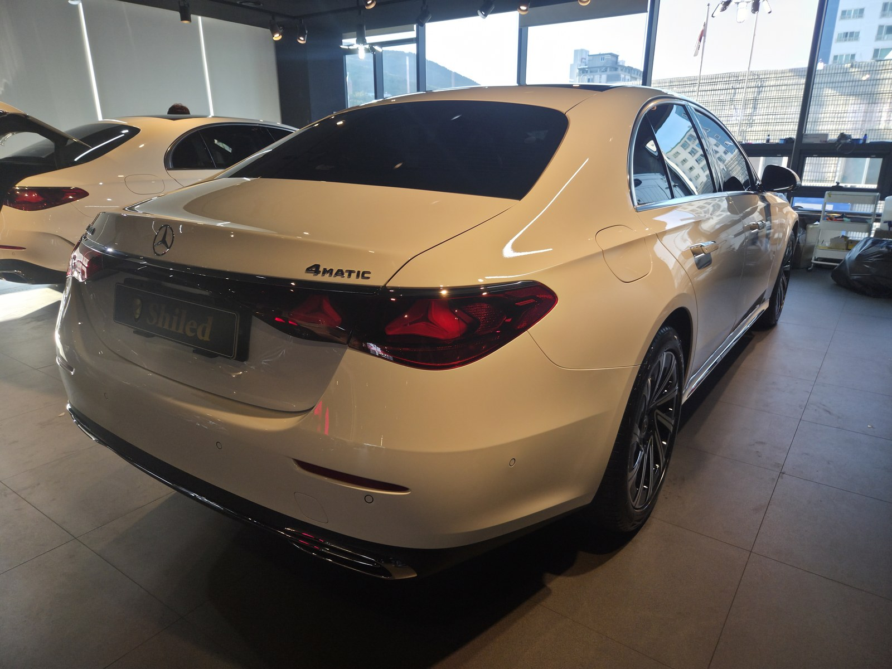
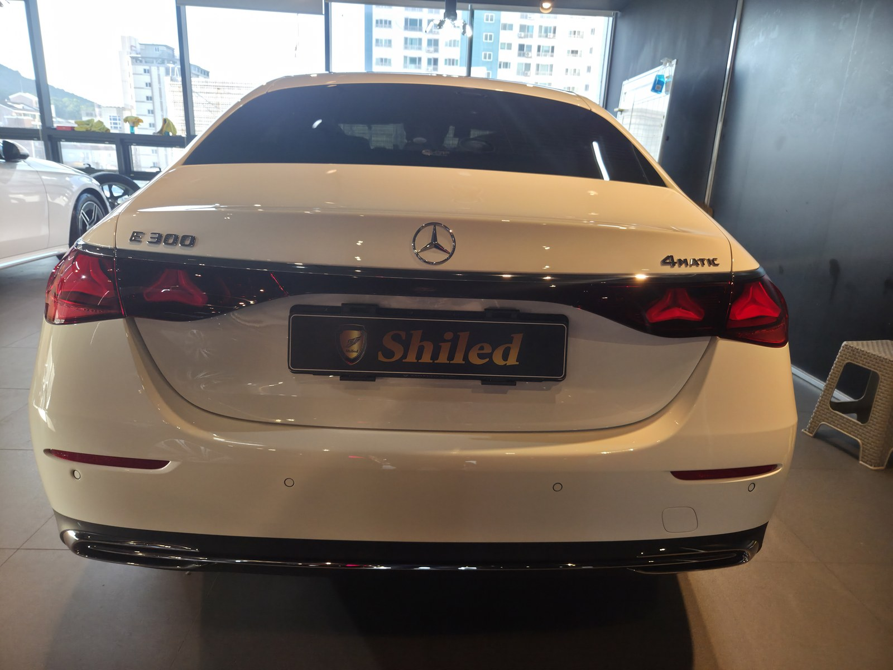
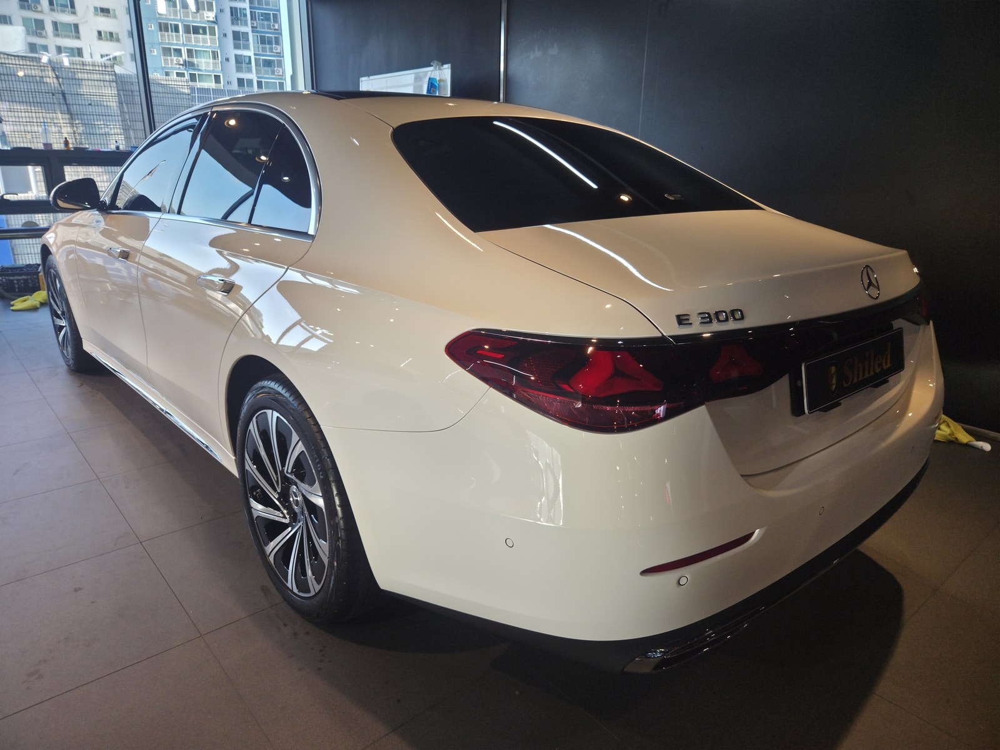
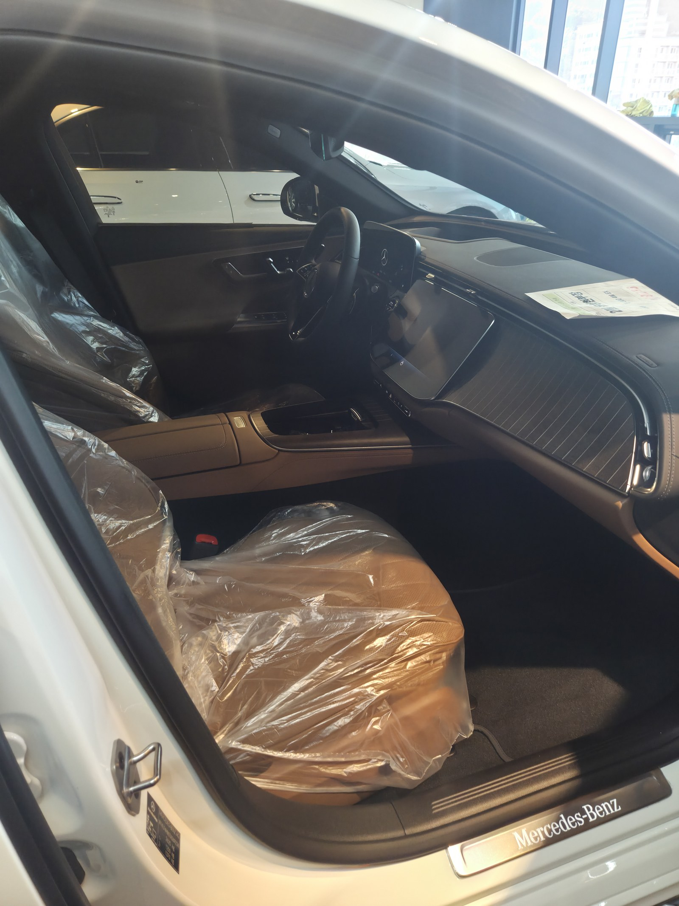
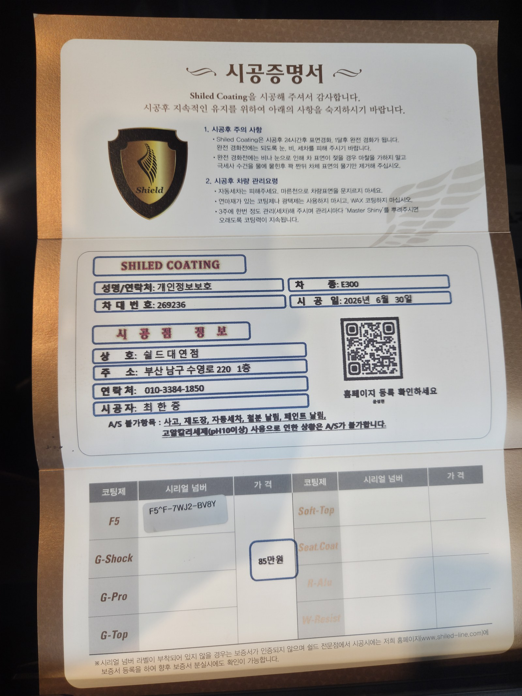

같은 화이트 E300이 이날 하루에만 두 대 입고됐습니다.
이 차는 그중 두 번째로 들어온 4MATIC 트림입니다.
부산 유리막코팅을 준비하는 분이라면, 같은 색·같은 차종이라도 개체마다 다르게 접근한다는 걸 이번 글로 보여드리고 싶습니다.

이날 두 번째로 입고된 화이트 E300, 무엇이 다른가
차대번호 끝자리는 269236, 앞서 입고된 차량과는 다른 개체입니다.
같은 화이트라도 그릴 크롬 몰딩의 반사 각도, 헤드램프 유닛의 미세한 광 편차까지 차량마다 조금씩 다릅니다. 부산에서 벤츠 신차코팅을 여러 대씩 다뤄본 경험상, 겉보기엔 같은 색이어도 도장면 상태를 하나하나 손으로 확인하는 과정을 생략하지 않습니다.

부산 유리막코팅, 왜 그릴·헤드라이트부터 잡는가
전면부는 주행 중 가장 먼저, 가장 오래 시선이 머무는 자리입니다.
크롬 그릴과 헤드램프 경계부는 이물질과 로드필름이 잘 남는 부위이기도 합니다. F5로 이 구간의 발색과 광택을 먼저 잡아두면 차량 전체 인상이 달라집니다. 코팅제는 대표가 화학공학 전공으로 직접 개발·제조한 제품입니다.

기술자의 팁
신차라고 바로 코팅을 올리지 않습니다. 매장에서도 세정제와 탈지제를 상시 갖춰두고, 운송·전시 중 묻은 미세 오염을 먼저 걷어냅니다. 특히 4MATIC처럼 하부 라인이 낮은 트림은 범퍼 하단 오염을 놓치기 쉬워 더 꼼꼼히 봅니다.

리어범퍼와 4MATIC 배지에 흐르는 광택
후면은 E300과 4MATIC 배지가 나란히 붙어 트림을 그대로 보여주는 자리입니다.
트렁크 리드의 완만한 곡선을 따라 F5의 반사가 매끄럽게 흐르도록 도포량과 방향을 맞췄습니다. 리어 콤비램프 안쪽 크롬 라인도 화이트 차체와 대비되며 선명하게 살아납니다.


실내는 아직 신차 필름 그대로입니다
스티어링 휠과 시트는 출고 당시 보호 비닐이 그대로 씌워진 상태입니다.
외부 도장은 F5로 광택을 잡되, 실내는 손대지 않고 신차 컨디션 그대로 인도합니다. 계기판과 센터 디스플레이도 필름을 유지한 채 전달됩니다.

시공증명서를 함께 드립니다
모든 시공 차량에 차종·시공일·코팅제 시리얼이 적힌 시공증명서를 드립니다.
이 차는 F5 코팅제(시리얼 F5^F-7WJ2-BV8Y)로 기록돼 있고, 차대번호 끝자리는 269236입니다. 증명서상 시공일은 6월 30일로 적혀 있는데, 입고와 코팅 작업이 늦은 시간까지 이어지며 서류 정리가 다음날로 넘어간 날짜입니다. 홈페이지에 등록하면 보증도 함께 받으실 수 있습니다.

차종·시공일·코팅제 시리얼이 기재된 시공증명서
자주 묻는 질문
Q. 같은 색상 같은 차종이 하루에 두 대씩 입고되기도 하나요?
A. 네, 신차 출고 전 코팅은 딜러사 협약 스케줄대로 진행돼 같은 색·같은 차종이 한 날 연달아 들어오는 경우가 흔합니다. 개체마다 도장 상태가 달라 매번 개별로 점검 후 코팅합니다.
Q. 화이트 4MATIC 신차에는 어떤 코팅이 좋나요?
A. 이 차는 F5로 진행했습니다. 화이트 특유의 매끈한 면과 넓은 범퍼 라인에 반사를 더해 입체감을 살립니다.
Q. 신차코팅도 전처리를 하나요?
A. 합니다. 신차라도 운송·전시 중 미세 오염이 묻습니다. 디테일링 세차와 탈지로 표면을 정리한 뒤 코팅을 올려야 제대로 밀착합니다.
Q. 시공증명서의 시공일이 입고일과 다를 수도 있나요?
A. 네, 있습니다. 입고와 작업이 늦은 시간까지 이어지면 서류 정리 시점 기준으로 다음날 날짜가 기재되기도 합니다. 시공 내용과 코팅제 시리얼은 증명서 그대로 유효합니다.
Q. 쉴드광택 위치와 예약은 어떻게 하나요?
A. 부산 남구 유엔로220 1F 쉴드광택입니다. 예약·상담은 010-3384-1850, 대표 최한중이 직접 상담하고 책임 시공합니다.
같은 차종이라도 개체 하나하나를 다르게 봅니다. 가장 깨끗할 때 입혀두십시오.
제품을 직접 만드는 사람이 직접 시공합니다.
부산에서 벤츠 신차코팅을 고민 중이시면 편하게 연락 주십시오.
어떤 차를 타냐보다 어떻게 타냐가 중요합니다~!
시공 중에는 전화를 받지 못할 때가 많습니다.
카카오톡으로 차종과 원하시는 시공을 남겨주시면 확인 후 답변드립니다.
쉴드광택 · 부산 남구 유엔로220 1F · 대표 최한중